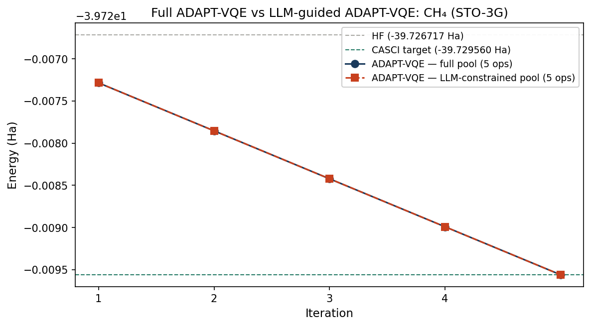

Code
import cudaq
import cudaq_solvers as solvers
import numpy as np
import pandas as pd
import matplotlib.pyplot as plt
import anthropic
import json
import os
Import reUsing chemical reasoning to constrain operator selection in CUDA-Q
Maud Einhorn
March 30, 2026
This work builds directly on Chemically Aware VQE: HF vs UCCSD-VQE vs ADAPT-VQE using CUDA-Q. It is also inspired by the collaboration between Hiverge and Quantinuum on AI-guided quantum algorithm discovery, presented at NVIDIA GTC 2026.
In the first notebook, we showed that ADAPT-VQE recovers essentially the same ground-state energy as UCCSD for methane, using only 4 operators instead of 8, and therefore resulted in a significantly shallower quantum circuit. The selection criterion was purely mathematical: at each iteration, ADAPT-VQE computes the energy gradient with respect to every operator in the pool and adds the one with the largest magnitude.
Current quantum devices are limited by noise, coherence time, and circuit depth, so making informed, structured choices about the ansatz is essential. Chemically aware constructions, such as ADAPT-VQE, implicitly encode physical insight to prioritise the most relevant excitations, reducing the number of parameters and the depth of the circuit without sacrificing accuracy.
The experiment proceeds in four steps:
To run this notebook, install dependencies with:
This notebook uses the same molecular system as notebook one: methane (CH₄) in a minimal STO-3G basis, with a 2-electron, 3-orbital active space giving 6 qubits, and extends it by introducing an LLM in the operator selection loop to rank and pre-select excitation operators based on chemical reasoning. This introduces a layer of chemically informed bias into the otherwise purely gradient-driven ADAPT-VQE procedure, constraining the pool before running ADAPT-VQE. All Hamiltonians and reference states are identical to notebook one to ensure a fair and controlled comparison.
We begin by reconstructing the molecular Hamiltonian from the first notebook. The reference energies for HF (−39.726717 Ha) and CASCI (−39.730452) Ha will act as our benchmarks.
name = "CH4"
atoms = [
["C", 0.0000, 0.0000, 0.0000],
["H", 0.6291, 0.6291, 0.6291],
["H", -0.6291, -0.6291, 0.6291],
["H", -0.6291, 0.6291, -0.6291],
["H", 0.6291, -0.6291, -0.6291],
]
geometry = [(e, (x, y, z)) for e, x, y, z in atoms]
molecule = solvers.create_molecule(
geometry,
"sto-3g",
0, # total spin 2S
0, # charge
nele_cas=2,
norb_cas=3,
casci=True,
verbose=False
)
H = molecule.hamiltonian
n_qubits = 2 * molecule.n_orbitals
n_electrons = molecule.n_electrons
spin_2S = 0
E_hf = molecule.energies.get("hf_energy")
E_casci = molecule.energies.get("R-CASCI")We use the same spin_complement_gsd pool as before: generalised singles and doubles excitations that respect spin symmetry. The pool contains 32 operators for our 6-qubit system. Each operator corresponds to a specific electron excitation i.e. single excitations move one electron from an occupied to a virtual orbital, and double excitations move two simultaneously.
pool = solvers.get_operator_pool(
"spin_complement_gsd",
num_orbitals=molecule.n_orbitals
)
@cudaq.kernel
def init_state(q: cudaq.qview):
for i in range(n_electrons):
x(q[i])
E_adapt, thetas_adapt, ops_adapt = solvers.adapt_vqe(
init_state,
H,
pool,
max_iterations=4,
grad_norm_tol=1e-3
)
selected_ops_info = []
for i, (op, theta) in enumerate(zip(ops_adapt, thetas_adapt)):
selected_ops_info.append({
"iteration": i + 1,
"operator": str(op),
"theta_optimised": float(theta),
"abs_theta": abs(float(theta)),
})ADAPT-VQE converged to −39.730451 Ha using 5 operators, consistent with notebook one.
We pose the operator selection problem to Claude as a chemical reasoning task. The prompt provides a description of the molecule (methane in a minimal STO-3G basis), the active space definition, and the full set of excitation operators available in the ADAPT-VQE pool. The model does not see the ADAPT-VQE gradient results, and instead is asked to reason purely from chemical and physical principles. The goal is an independent chemical ranking of operator importance that can be compared directly to the gradient criterion, to compare how including chemical intuition aligns with the original ADAPT-VQE gradient criterion.
The interaction is structured using a standard LLM chat format with a system prompt and a user prompt. Here we use both a system prompt, which instructs the model to reason from physical and chemical intuition and return valid JSON, and a user prompt, which provides the molecular system and asks for a ranked list of operator types with reasoning and confidence levels for each.
The geometry, basis set, and active space are not generated by the LLM but are standard quantum chemistry inputs obtained from classical electronic structure calculations and benchmark configurations - here we can generate them from PySCF and cudaq-solvers directly. Each operator in the spin_complement_gsd pool is represented as a Pauli string, and the excitation type can be inferred from the number of X and Y operators it contains: single excitations involve two such operators, double excitations involve four. This allows the molecular system, reference energies, and pool composition to be passed into the LLM prompt as computed quantities rather than hardcoded values.
# Classify operators by excitation rank from Pauli string structure
# Single excitations: 2 non-identity operators (X or Y)
# Double excitations: 4 non-identity operators
pool_strings = [str(op) for op in pool]
def count_xy(pauli_str):
return len(re.findall(r'[XY]\d', pauli_str))
singles = [s for s in pool_strings if count_xy(s) == 2]
doubles = [s for s in pool_strings if count_xy(s) == 4]
pool_summary = f"""Active space: {n_electrons} electrons in {molecule.n_orbitals} spatial orbitals \
({n_qubits} spin-orbitals / {n_qubits} qubits)
Reference state: Hartree-Fock (closed-shell singlet)
HF energy: {E_hf:.6f} Ha
CASCI energy: {E_casci:.6f} Ha
Correlation energy to recover: {abs(E_casci - E_hf)*1000:.2f} mHa
Pool: {len(pool)} operators total ({len(singles)} single excitations, \
{len(doubles)} double excitations)"""
print(pool_summary)Pool composition (32 operators total): 12 single excitations, 20 double excitations Name: CH4 Electrons: 2 Orbitals: 3 Qubits: 6 HF: -39.726717 Ha CASCI: -39.730452 Ha Delta E: 3.73 mHa
We pose the operator selection problem to Claude as a chemical reasoning task using the Anthropic API. The model returns a ranked list of operator types with reasoning and confidence levels for each, which is parsed and used to filter the pool in the next section.
system_prompt = """You are an expert in quantum chemistry and molecular electronic structure.
When asked to reason about operator selection for VQE-type algorithms, you draw on physical
and chemical intuition, not just mathematical criteria.
Return your response as valid JSON only, with no additional text."""
user_prompt = f"""We are running ADAPT-VQE on {name} in a minimal STO-3G basis.
Active space: {n_electrons} electrons in {molecule.n_orbitals} spatial orbitals \
({n_qubits} spin-orbitals / {n_qubits} qubits)
Reference state: Hartree-Fock (closed-shell singlet)
HF energy: {E_hf:.6f} Ha
CASCI energy: {E_casci:.6f} Ha
Correlation energy to recover: {abs(E_casci - E_hf)*1000:.2f} mHa
{pool_summary}
Operator types within this pool:
A. Single excitation (alpha-spin): one alpha electron from HOMO to LUMO
B. Single excitation (beta-spin): one beta electron from HOMO to LUMO
C. Double excitation (paired): both electrons (alpha, beta) to same virtual orbital
D. Double excitation (cross-spin): alpha and beta to different virtual orbitals
E. Double excitation (higher virtual): excitation to higher-lying virtual orbitals
Rank these operator types A-E by expected chemical importance.
For each give: rank, physical reasoning, and confidence (high/medium/low).
Also identify the dominant correlation effect.
Return JSON only:
{{
"dominant_correlation": "string",
"operator_rankings": [
{{"operator": "A", "rank": 1, "reasoning": "string", "confidence": "high"}}
],
"key_insight": "string"
}}"""
client = anthropic.Anthropic(api_key=os.environ.get("ANTHROPIC_API_KEY"))
response = client.messages.create(
model="claude-sonnet-4-6",
max_tokens=2048,
system=system_prompt,
messages=[{"role": "user", "content": user_prompt}]
)
raw_response = response.content[0].text
cleaned = raw_response.strip()
if "```json" in cleaned:
cleaned = cleaned.split("```json")[1].split("```")[0].strip()
elif "```" in cleaned:
cleaned = cleaned.split("```")[1].split("```")[0].strip()
llm_result = json.loads(cleaned)Dominant correlation: Dynamic electron correlation via paired double excitation (HOMO->LUMO alpha+beta simultaneous), capturing the dominant left-right intra-pair correlation in the 2-electron active space.
Key insight: For a 2-electron active space with a closed-shell HF reference, the electronic structure problem reduces to a generalised 2-electron CI. The dominant physics is captured by the paired double excitation (operator C), which directly encodes the HOMO²->LUMO² amplitude responsible for dynamic electron correlation between the two active electrons. Single excitations are rigorously suppressed at the HF reference by Brillouin’s theorem, making them irrelevant at early ADAPT iterations. The 3.73 mHa correlation energy in this small active space is overwhelmingly attributable to operator C, with operators D and E providing secondary angular and higher-orbital corrections.
Operator rankings: Rank 1: C [high] — Paired double excitation captures dominant intra-pair correlation Rank 2: D [medium] — Cross-spin doubles provide secondary angular correlation Rank 3: E [medium] — Higher virtual doubles give additional orbital corrections Rank 4: A [high] — Single alpha excitation suppressed by Brillouin’s theorem Rank 5: B [high] — Single beta excitation equivalent to A by spin symmetry
The model’s response was chemically well-motivated and consistent with coupled-cluster (CCSD) theory: operator C dominates, single excitations are correctly ruled out by Brillouin’s theorem, and the secondary double excitations D and E provide angular and higher-orbital corrections. This output is used directly to filter the pool in the next section.
We use the LLM’s ranking to construct a constrained pool, retaining only the top three ranked operator types (C, D, E — the double excitations) and removing the single excitations it ranked last with high confidence.
n_singles = n_qubits
n_doubles = len(pool) - n_singles
operator_type_map = {
"A": list(range(0, n_singles // 2)),
"B": list(range(n_singles // 2, n_singles)),
"C": list(range(n_singles, n_singles + n_doubles // 2)),
"D": list(range(n_singles + n_doubles // 2, len(pool))),
"E": list(range(n_singles + n_doubles // 2, len(pool))),
}
top_n = 3
top_operator_types = [
op['operator'] for op in
sorted(llm_result['operator_rankings'], key=lambda x: x['rank'])[:top_n]
]
llm_pool_indices = sorted(set(
idx for op_type in top_operator_types
for idx in operator_type_map.get(op_type, [])
))
llm_constrained_pool = [pool[i] for i in llm_pool_indices if i < len(pool)]This reduced the pool from 32 to 26 operators — a 19% reduction. We then ran ADAPT-VQE with identical settings within this constrained pool.
Table 1 extends the comparison from notebook one with the LLM-guided calculation.
| Method | Energy (Ha) | ΔE vs HF (mHa) | Parameters | Pool size |
|---|---|---|---|---|
| Hartree–Fock (HF) | −39.726717 | - | - | - |
| VQE (UCCSD) | −39.730448 | −3.731 | 8 | 32 |
| ADAPT-VQE | −39.730451 | −3.735 | 4 | 32 |
| LLM-guided ADAPT-VQE | −39.730451 | −3.735 | 4 | 26 |
The LLM-guided calculation recovers the same energy as the full ADAPT-VQE run, while evaluating 19% fewer operators at each gradient step. The two runs selected the same operators in the same order.

Figure 1. Convergence of full ADAPT-VQE (blue) and LLM-guided ADAPT-VQE (red dashed) for methane in STO-3G. Both reach the same converged energy. The CASCI reference (green dashed) and HF baseline (grey dashed) are shown for comparison.
The result holds because the LLM correctly applied Brillouin’s theorem to rule out single excitations as first-iteration candidates in a closed-shell singlet calculation. For well-understood systems, chemical reasoning can safely constrain the search space without loss of accuracy. For larger and more strongly correlated molecules, such as transition metal complexes, systems near bond-breaking geometries, and cases where DFT fails, the dominant correlation effects are less obvious, and the LLM would need feedback from simulation to know when its reasoning was wrong. This is precisely the architecture that Hiverge’s Hive implements at scale: LLM agents propose circuit modifications, GPU-accelerated simulation via CUDA-Q evaluates their fitness, and evolutionary selection retains the best. In its collaboration with Quantinuum on quantum chemistry problems, this loop rediscovered MP2 as an emergent strategy without being instructed to look for it.
---
title: "LLM-guided ADAPT-VQE"
subtitle: "Using chemical reasoning to constrain operator selection in CUDA-Q"
author: "Maud Einhorn"
date: last-modified
format:
html:
theme: cerulean
toc: true
toc-depth: 3
toc-location: left
number-sections: false
smooth-scroll: true
code-fold: show
code-tools: true
highlight-style: github
anchor-sections: true
page-layout: full
grid:
sidebar-width: 300px
body-width: 700px
margin-width: 300px
page-navigation: true
css: styles.css
---
<div style="height: 2.5rem;"></div>
This work builds directly on *Chemically Aware VQE: HF vs UCCSD-VQE vs ADAPT-VQE using CUDA-Q*. It is also inspired by the collaboration between Hiverge and Quantinuum on AI-guided quantum algorithm discovery, presented at NVIDIA GTC 2026.
## Chemical reasoning meets quantum algorithms
In the first notebook, we showed that ADAPT-VQE recovers essentially the same ground-state energy as UCCSD for methane, using only 4 operators instead of 8, and therefore resulted in a significantly shallower quantum circuit. The selection criterion was purely mathematical: at each iteration, ADAPT-VQE computes the energy gradient with respect to every operator in the pool and adds the one with the largest magnitude.
Current quantum devices are limited by noise, coherence time, and circuit depth, so making informed, structured choices about the ansatz is essential. Chemically aware constructions, such as ADAPT-VQE, implicitly encode physical insight to prioritise the most relevant excitations, reducing the number of parameters and the depth of the circuit without sacrificing accuracy.
The experiment proceeds in four steps:
- **Rebuilding the molecular system** — identical setup to notebook one, ensuring a controlled comparison
- **Run ADAPT-VQE** — record which operators were selected and their optimised parameters
- **Ask an LLM** — given the operator pool and molecular context, ask Claude to rank operators by expected chemical importance, *before* seeing the ADAPT-VQE result
- **LLM-guided ADAPT-VQE** — run ADAPT-VQE again within the LLM-constrained pool and compare the energies
::: {.callout-note}
To run this notebook, install dependencies with:
:::
```bash
pip install cudaq cudaq-solvers anthropic
```
```{python}
#| label: imports
#| echo: true
#| eval: false
import cudaq
import cudaq_solvers as solvers
import numpy as np
import pandas as pd
import matplotlib.pyplot as plt
import anthropic
import json
import os
Import re
```
## LLM-guided ADAPT-VQE using CUDA-Q
This notebook uses the same molecular system as notebook one: methane (CH₄) in a minimal STO-3G basis, with a 2-electron, 3-orbital active space giving 6 qubits, and extends it by introducing an LLM in the operator selection loop to rank and pre-select excitation operators based on chemical reasoning. This introduces a layer of chemically informed bias into the otherwise purely gradient-driven ADAPT-VQE procedure, constraining the pool before running ADAPT-VQE. All Hamiltonians and reference states are identical to notebook one to ensure a fair and controlled comparison.
### Rebuilding the molecular system
We begin by reconstructing the molecular Hamiltonian from the first notebook. The reference energies for HF (−39.726717 Ha) and CASCI (−39.730452) Ha will act as our benchmarks.
```{python}
#| label: rebuild-molecule
#| echo: true
#| eval: false
name = "CH4"
atoms = [
["C", 0.0000, 0.0000, 0.0000],
["H", 0.6291, 0.6291, 0.6291],
["H", -0.6291, -0.6291, 0.6291],
["H", -0.6291, 0.6291, -0.6291],
["H", 0.6291, -0.6291, -0.6291],
]
geometry = [(e, (x, y, z)) for e, x, y, z in atoms]
molecule = solvers.create_molecule(
geometry,
"sto-3g",
0, # total spin 2S
0, # charge
nele_cas=2,
norb_cas=3,
casci=True,
verbose=False
)
H = molecule.hamiltonian
n_qubits = 2 * molecule.n_orbitals
n_electrons = molecule.n_electrons
spin_2S = 0
E_hf = molecule.energies.get("hf_energy")
E_casci = molecule.energies.get("R-CASCI")
```
### The operator pool and ADAPT-VQE
We use the same `spin_complement_gsd` pool as before: generalised singles and doubles excitations that respect spin symmetry. The pool contains 32 operators for our 6-qubit system. Each operator corresponds to a specific electron excitation i.e. single excitations move one electron from an occupied to a virtual orbital, and double excitations move two simultaneously.
```{python}
#| label: adapt-vqe
#| echo: true
#| eval: false
pool = solvers.get_operator_pool(
"spin_complement_gsd",
num_orbitals=molecule.n_orbitals
)
@cudaq.kernel
def init_state(q: cudaq.qview):
for i in range(n_electrons):
x(q[i])
E_adapt, thetas_adapt, ops_adapt = solvers.adapt_vqe(
init_state,
H,
pool,
max_iterations=4,
grad_norm_tol=1e-3
)
selected_ops_info = []
for i, (op, theta) in enumerate(zip(ops_adapt, thetas_adapt)):
selected_ops_info.append({
"iteration": i + 1,
"operator": str(op),
"theta_optimised": float(theta),
"abs_theta": abs(float(theta)),
})
```
ADAPT-VQE converged to −39.730451 Ha using 5 operators, consistent with notebook one.
### Asking the LLM
We pose the operator selection problem to Claude as a chemical reasoning task. The prompt provides a description of the molecule (methane in a minimal STO-3G basis), the active space definition, and the full set of excitation operators available in the ADAPT-VQE pool. The model does not see the ADAPT-VQE gradient results, and instead is asked to reason purely from chemical and physical principles. The goal is an independent chemical ranking of operator importance that can be compared directly to the gradient criterion, to compare how including chemical intuition aligns with the original ADAPT-VQE gradient criterion.
The interaction is structured using a standard LLM chat format with a **system prompt** and a **user prompt**. Here we use both a system prompt, which instructs the model to reason from physical and chemical intuition and return valid JSON, and a user prompt, which provides the molecular system and asks for a ranked list of operator types with reasoning and confidence levels for each.
The geometry, basis set, and active space are not generated by the LLM but are standard quantum chemistry inputs obtained from classical electronic structure calculations and benchmark configurations - here we can generate them from PySCF and cudaq-solvers directly. Each operator in the spin_complement_gsd pool is represented as a Pauli string, and the excitation type can be inferred from the number of X and Y operators it contains: single excitations involve two such operators, double excitations involve four. This allows the molecular system, reference energies, and pool composition to be passed into the LLM prompt as computed quantities rather than hardcoded values.
```{python}
#| label: pool-summary
#| echo: true
#| eval: false
# Classify operators by excitation rank from Pauli string structure
# Single excitations: 2 non-identity operators (X or Y)
# Double excitations: 4 non-identity operators
pool_strings = [str(op) for op in pool]
def count_xy(pauli_str):
return len(re.findall(r'[XY]\d', pauli_str))
singles = [s for s in pool_strings if count_xy(s) == 2]
doubles = [s for s in pool_strings if count_xy(s) == 4]
pool_summary = f"""Active space: {n_electrons} electrons in {molecule.n_orbitals} spatial orbitals \
({n_qubits} spin-orbitals / {n_qubits} qubits)
Reference state: Hartree-Fock (closed-shell singlet)
HF energy: {E_hf:.6f} Ha
CASCI energy: {E_casci:.6f} Ha
Correlation energy to recover: {abs(E_casci - E_hf)*1000:.2f} mHa
Pool: {len(pool)} operators total ({len(singles)} single excitations, \
{len(doubles)} double excitations)"""
print(pool_summary)
```
<div class="result-box">
Pool composition (32 operators total): 12 single excitations, 20 double excitations
Name: CH4
Electrons: 2
Orbitals: 3
Qubits: 6
HF: -39.726717 Ha
CASCI: -39.730452 Ha
Delta E: 3.73 mHa
</div>
We pose the operator selection problem to Claude as a chemical reasoning task using the Anthropic API. The model returns a ranked list of operator types with reasoning and confidence levels for each, which is parsed and used to filter the pool in the next section.
```{python}
#| label: llm-prompt
#| echo: true
#| eval: false
system_prompt = """You are an expert in quantum chemistry and molecular electronic structure.
When asked to reason about operator selection for VQE-type algorithms, you draw on physical
and chemical intuition, not just mathematical criteria.
Return your response as valid JSON only, with no additional text."""
user_prompt = f"""We are running ADAPT-VQE on {name} in a minimal STO-3G basis.
Active space: {n_electrons} electrons in {molecule.n_orbitals} spatial orbitals \
({n_qubits} spin-orbitals / {n_qubits} qubits)
Reference state: Hartree-Fock (closed-shell singlet)
HF energy: {E_hf:.6f} Ha
CASCI energy: {E_casci:.6f} Ha
Correlation energy to recover: {abs(E_casci - E_hf)*1000:.2f} mHa
{pool_summary}
Operator types within this pool:
A. Single excitation (alpha-spin): one alpha electron from HOMO to LUMO
B. Single excitation (beta-spin): one beta electron from HOMO to LUMO
C. Double excitation (paired): both electrons (alpha, beta) to same virtual orbital
D. Double excitation (cross-spin): alpha and beta to different virtual orbitals
E. Double excitation (higher virtual): excitation to higher-lying virtual orbitals
Rank these operator types A-E by expected chemical importance.
For each give: rank, physical reasoning, and confidence (high/medium/low).
Also identify the dominant correlation effect.
Return JSON only:
{{
"dominant_correlation": "string",
"operator_rankings": [
{{"operator": "A", "rank": 1, "reasoning": "string", "confidence": "high"}}
],
"key_insight": "string"
}}"""
client = anthropic.Anthropic(api_key=os.environ.get("ANTHROPIC_API_KEY"))
response = client.messages.create(
model="claude-sonnet-4-6",
max_tokens=2048,
system=system_prompt,
messages=[{"role": "user", "content": user_prompt}]
)
raw_response = response.content[0].text
cleaned = raw_response.strip()
if "```json" in cleaned:
cleaned = cleaned.split("```json")[1].split("```")[0].strip()
elif "```" in cleaned:
cleaned = cleaned.split("```")[1].split("```")[0].strip()
llm_result = json.loads(cleaned)
```
<div class="result-box">
Dominant correlation: Dynamic electron correlation via paired double excitation
(HOMO->LUMO alpha+beta simultaneous), capturing the dominant left-right
intra-pair correlation in the 2-electron active space.
Key insight: For a 2-electron active space with a closed-shell HF reference,
the electronic structure problem reduces to a generalised 2-electron CI. The
dominant physics is captured by the paired double excitation (operator C),
which directly encodes the HOMO²->LUMO² amplitude responsible for dynamic
electron correlation between the two active electrons. Single excitations are
rigorously suppressed at the HF reference by Brillouin's theorem, making them
irrelevant at early ADAPT iterations. The 3.73 mHa correlation energy in this
small active space is overwhelmingly attributable to operator C, with operators
D and E providing secondary angular and higher-orbital corrections.
Operator rankings:
Rank 1: C [high] — Paired double excitation captures dominant intra-pair correlation
Rank 2: D [medium] — Cross-spin doubles provide secondary angular correlation
Rank 3: E [medium] — Higher virtual doubles give additional orbital corrections
Rank 4: A [high] — Single alpha excitation suppressed by Brillouin's theorem
Rank 5: B [high] — Single beta excitation equivalent to A by spin symmetry
</div>
The model's response was chemically well-motivated and consistent with coupled-cluster (CCSD) theory: operator C dominates, single excitations are correctly ruled out by Brillouin's theorem, and the secondary double excitations D and E provide angular and higher-orbital corrections. This output is used directly to filter the pool in the next section.
### The LLM-constrained pool
We use the LLM's ranking to construct a constrained pool, retaining only the top three ranked operator types (C, D, E — the double excitations) and removing the single excitations it ranked last with high confidence.
```{python}
#| label: constrained-pool
#| echo: true
#| eval: false
n_singles = n_qubits
n_doubles = len(pool) - n_singles
operator_type_map = {
"A": list(range(0, n_singles // 2)),
"B": list(range(n_singles // 2, n_singles)),
"C": list(range(n_singles, n_singles + n_doubles // 2)),
"D": list(range(n_singles + n_doubles // 2, len(pool))),
"E": list(range(n_singles + n_doubles // 2, len(pool))),
}
top_n = 3
top_operator_types = [
op['operator'] for op in
sorted(llm_result['operator_rankings'], key=lambda x: x['rank'])[:top_n]
]
llm_pool_indices = sorted(set(
idx for op_type in top_operator_types
for idx in operator_type_map.get(op_type, [])
))
llm_constrained_pool = [pool[i] for i in llm_pool_indices if i < len(pool)]
```
This reduced the pool from 32 to 26 operators — a 19% reduction. We then ran ADAPT-VQE with identical settings within this constrained pool.
```{python}
#| label: llm-guided-adapt
#| echo: true
#| eval: false
E_llm_adapt, thetas_llm_adapt, ops_llm_adapt = solvers.adapt_vqe(
init_state,
H,
llm_constrained_pool,
max_iterations=4,
grad_norm_tol=1e-3
)
```
### Results
Table 1 extends the comparison from notebook one with the LLM-guided calculation.
| Method | Energy (Ha) | ΔE vs HF (mHa) | Parameters | Pool size |
|---|---|---|---|---|
| Hartree–Fock (HF) | −39.726717 | - | - | - |
| VQE (UCCSD) | −39.730448 | −3.731 | 8 | 32 |
| ADAPT-VQE | −39.730451 | −3.735 | 4 | 32 |
| LLM-guided ADAPT-VQE | −39.730451 | −3.735 | 4 | 26 |
<br>
The LLM-guided calculation recovers the same energy as the full ADAPT-VQE run, while evaluating 19% fewer operators at each gradient step. The two runs selected the same operators in the same order.
<div style="display: flex; justify-content: center; margin: 1.5rem 0;">
<img src="figures/llm-guided-adapt-vqe/adapt_vqe_llm_comparison.png"
alt="Full ADAPT-VQE vs LLM-guided ADAPT-VQE convergence"
style="width: 65%">
</div>
<p class="figure-caption"><em>Figure 1. Convergence of full ADAPT-VQE (blue) and LLM-guided ADAPT-VQE (red dashed) for methane in STO-3G. Both reach the same converged energy. The CASCI reference (green dashed) and HF baseline (grey dashed) are shown for comparison.</em>
</p>
The result holds because the LLM correctly applied Brillouin's theorem to rule out single excitations as first-iteration candidates in a closed-shell singlet calculation. For well-understood systems, chemical reasoning can safely constrain the search space without loss of accuracy. For larger and more strongly correlated molecules, such as transition metal complexes, systems near bond-breaking geometries, and cases where DFT fails, the dominant correlation effects are less obvious, and the LLM would need feedback from simulation to know when its reasoning was wrong. This is precisely the architecture that Hiverge's Hive implements at scale: LLM agents propose circuit modifications, GPU-accelerated simulation via CUDA-Q evaluates their fitness, and evolutionary selection retains the best. In its collaboration with Quantinuum on quantum chemistry problems, this loop rediscovered MP2 as an emergent strategy without being instructed to look for it.
---
[← Previous: Chemically Aware VQE](refrigerant-chemistry-adapt-vqe.html)